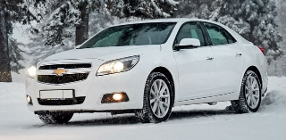
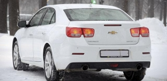
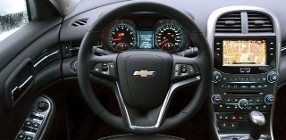
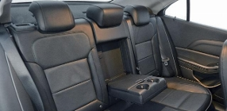

Знойный янки
(11.12.2012)Наше знакомство с Chevrolet Malibu / Шевроле Малибу совпало с похолоданием в Москве, первым снегопадом и транспортным параличом. Впрочем, улицы города, зардевшиеся на карте пробок, как Сокольническая линия метро, не заставили корреспондента «Итогов» поставить «американца» на прикол. Потому что в Chevrolet Malibu / Шевроле Малибу хорошо. Не только из-за чумовой печки: само имя греет. Подумаешь о пляжах Малибу, красавицах в бикини, ласковых волнах Тихого океана — сразу становится теплее. И в подземку как-то не тянет.
Казалось бы, здоровый американский седан, пусть и сделанный в Корее, должен вызывать на дороге уважение. На самом деле все зависит от угла зрения. В зеркале заднего вида ваше "лицо азиатского типа" могут принять за обычный Chevrolet Cruze / Шевроле Круз, но стоит обогнать непонятливого, покрутив у него под носом сексуальной попкой в стиле Chevrolet Camaro / Шевроле Камаро, и становится ясно, кто тут главный. Пара хромированных патрубков намекает на недюжинную мощь, да и вообще внешность Chevrolet Malibu / Шевроле Малибу — один из главных его козырей. С какого ракурса ни глянь, придраться не к чему. Стильно, изящно, пропорционально. И что самое интересное, машина ни на что не похожа. В наше время это дорогого стоит.
Самобытен и салон. Панель примечательна не столько дизайном, сколько разнофактурностью: гулкие вставки перемежаются с мягкими элементами, а на козырьке приборки есть даже подобие кожи. Без вездесущего псевдометалла тоже не обошлось, но если абстрагироваться от тактильных нюансов, внутренности Chevrolet Malibu / Шевроле Малибу производят приятное эстетическое и эргономическое ощущение. В этом "кабинете" имеется и "сейф за гербом": центральный сенсорный дисплей можно открыть и получить доступ к маленькому тайничку. Кто не знает, в жизни не догадается.
Габариты автомобиля поражают: несмотря на то что "родители" относят его к среднему классу, по длине кузова Chevrolet переплюнул даже Toyota Camry. При таких внешних данных простор во втором ряду должен быть королевский, но не тут-то было. Коленями во впереди стоящее кресло не упрешься, и все же среди конкурентов есть экземпляры попросторнее, где фактически можно закинуть ногу на ногу. Полезные миллиметры, скорее всего, ушли в багажник: в нем аж 545 литров, да и проем удался.
А каково рулевому? Передние сиденья имеют развитую боковую поддержку, правда, ее усилия в поворотах сводятся на нет скользкой кожей. Казалось бы, что за проблема: возьми "тряпку", и все дела. Только комплектация у Malibu одна-единственная и предполагает кожаную обивку. Это не повод для расстройства: виражи на Chevrolet Malibu / Шевроле Малибу все равно не позакладываешь. Недостает обратной связи: входишь в поворот — и баранка пустеет, лишь на выходе появляется небольшое реактивное усилие. Винить в этом исключительно зимние шины, наверное, не стоит.
Зато как порадовала динамика! Нет, не подумайте только, что старый добрый 2,4-литровый мотор оснастили турбонаддувом: здесь по-прежнему 167 сил и 225 ньютон-метров, придушенные нормами Евро-5. Приятные эмоции "пилоту" Chevrolet Malibu / Шевроле Малибу дарят не секунды разгона до сотни, а реакции на действия водителя. Такой отзывчивый движок пятого экологического класса еще поискать: чуть нажал на газ — и машина мгновенно подчиняется. Молодец и автомат: всегда подтыкает нужную передачу. Все это позволяет чувствовать себя уверенно в вялотекущих пробках: увидел просвет — и через доли секунды ты уже в соседнем ряду. Подобную прыть не всегда показывают куда более мощные аппараты.
В большинстве городских ситуаций "четверки" хватает за глаза. Конечно, на высоких скоростях хотелось бы побольше дури, но что есть, то есть. Chevrolet Malibu / Шевроле Малибу — автомобиль для размеренного и комфортного передвижения: именно покой водителя и пассажиров джиэмовцы поставили во главу угла. За шумоизоляцию — твердая пятерка: более тихого аппарата в этом ценовом сегменте не сыскать. Даже если мчать во весь опор, двигатель слышно едва-едва, шум от дороги — не более чем слабый фон. Ощущение отстраненности такое, что чувство скорости скрадывается просто фантастическим образом. Едешь 120 километров в час, а кажется, что не больше восьмидесяти. Сюда бы подвеску чуть помягче (ее в угоду малым кренам подзажали), и вышел бы из Malibu настоящий американский дорожный крейсер, которому любая неровность нипочем.
На кого же рассчитан этот "янки"? Ясно, что в числе покупателей не окажется бывших "волгарей": их ориентир — азиатские бизнес-седаны. Раздобревший офисный планктон тоже не возьмет Malibu: не тот градус пафоса. Типичный владелец "корейского американца" — это самодостаточный семьянин со средним уровнем дохода, которому, с одной стороны, чужд спортивный стиль вождения, с другой — важен уровень комфорта и небезразличен собственный имидж. С последними пунктами у Chevrolet Malibu / Шевроле Малибу полный "олрайт".
ИТОГИ (85000), №50, 10 December 2012, стр.52-53, A4 2/1, Автомобили
Григорий Кошелев